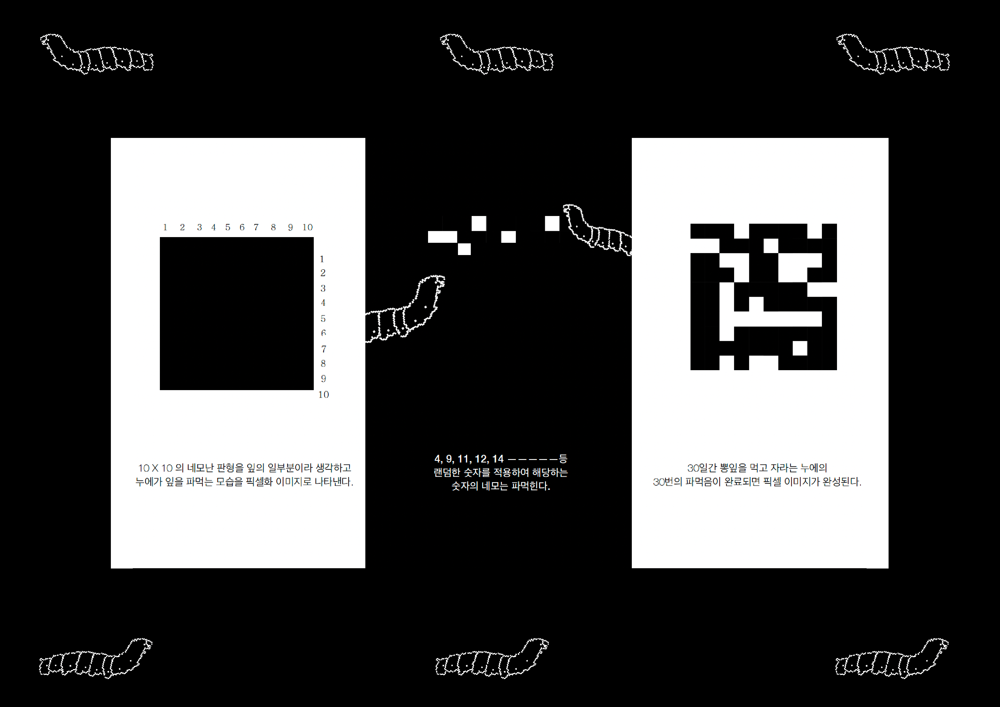

MAPPING YOUR TIME
VD1
Time in Bus
버스에 있는 시간동안 마주하는 상황과 감정, 생각들을 시각화해서 만든 지도이다.
SHAPE POSTER
VD1
Triangle footprint
삼각형의 단순한 조합으로 발자국들을 만들어 불특정 대상들의 이동을 담은 포스터이다.
MAXIMALISM POSTER
VD1
Maximal Morus
뽕나무의 요소들을 반복적인 픽셀로 표현한 포스터이다.
GENERATIVE SYSTEM
VD1


MORUS
‘MORUS’ 는 뽕나무의 개념을 시작으로 만들어진 브랜드이다.
누에가 뽕잎을 한입씩 갉아먹는 행동을 점의 요소로 사용하고, 먹힌 잎의 자리들은 누에가 만든 실로 연결된다. 만들어진 선의 요소들은 합쳐져 (직물)면으로 구성되는 시스템을 가진다.
시스템을 거치며 만들어지는 형태들은 티셔츠의 이미지로 재구성된다.
5 PATTERN POSTERS
VD2
음주가무
나를 표현하는 사물 중 악보, 위스키, 술잔을 가져와 음주가무를 표현한 패턴 포스터이다.
EXHIBITION IDENTITY
VD2
시각소동: ‘시각소동’이라는 단어에서 느껴지는 소리와 움직임을 시각화한 전시 기획 아이디어이다.
시각회: 시각만찬을 즐기는 사람들의 뜻을 가진 ‘시각회’의 단어 그대로를 표현한 전시 기획 아이디어이다.
SELF IDENTITY
VD2
이 위치로 직접 가서 확인해보세요!